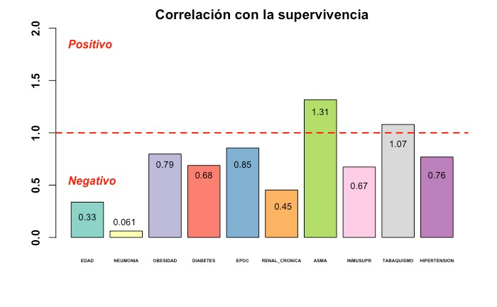
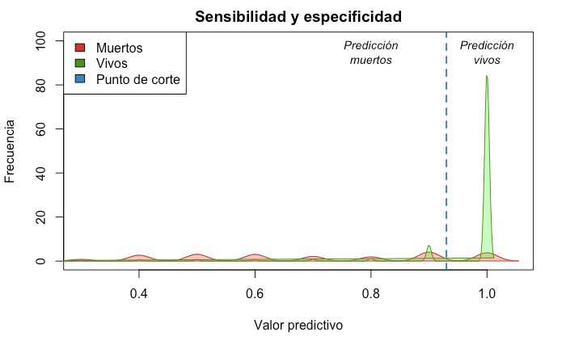
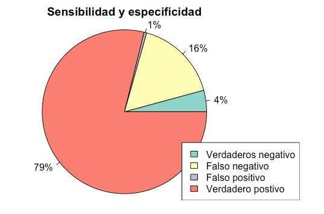

Valoración de la efectividad
A continuación se mostrarán las diferentes gráficas que representan los análisis aplicados para validad la efectividad de predicción del modelo.
A continuación se mostrarán las diferentes gráficas que representan los análisis aplicados para validad la efectividad de predicción del modelo.
En estas gráficas podemos observar algunos de los valores del intercepto generados a partir de la regresión logística.
El valor del intercepto se interpreta de la siguiente manera:
A partir de las comorbilidades mencionadas anteriormente, las siguientes gráficas de pastel muestran la proporción de individuos muertos contra los individuos que sobrevivieron ante el COVID-19 de acuerdo a la comorbilidad. Podemos observar que las condiciones con mayor correlación negativa (neumonía, enfermedad renal crónica, etc.) el porcentaje de muertos es mayor que en aquellas con correlación positiva o cercana a 1 (asma, tabaquismo, hipertensión, etc.).
Esta gráfica muestra la relación entre sensibilidad y especificidad del modelo para predecir a los individuos que viven o mueren en caso de contraer COVID-19 y que presentaban alguna comorbilidad. Por medio del modelo de regresión logística generado se le asignó un valor predictivo a cada paciente dependiendo de las comorbilidades que presentaba.
Debido a que el modelo busca principalmente predecir los pacientes que sobrevivirán al contraer la enfermedad, se realizó el cálculo del punto de corte que indica el umbral para clasificar de manera más acertada entre vivos y muertos.
El pie que se muestra a continuación, indica los porcentajes de la relación Sensibilidad-Especificidad que el modelo es capaz de predecir a partir de los datos recabados de la SEGOB. De este modo podemos confirmar que nuestro modelo predijo correctamente en un 83% de las ocasiones, lo cual indica un alto grado de efectividad.